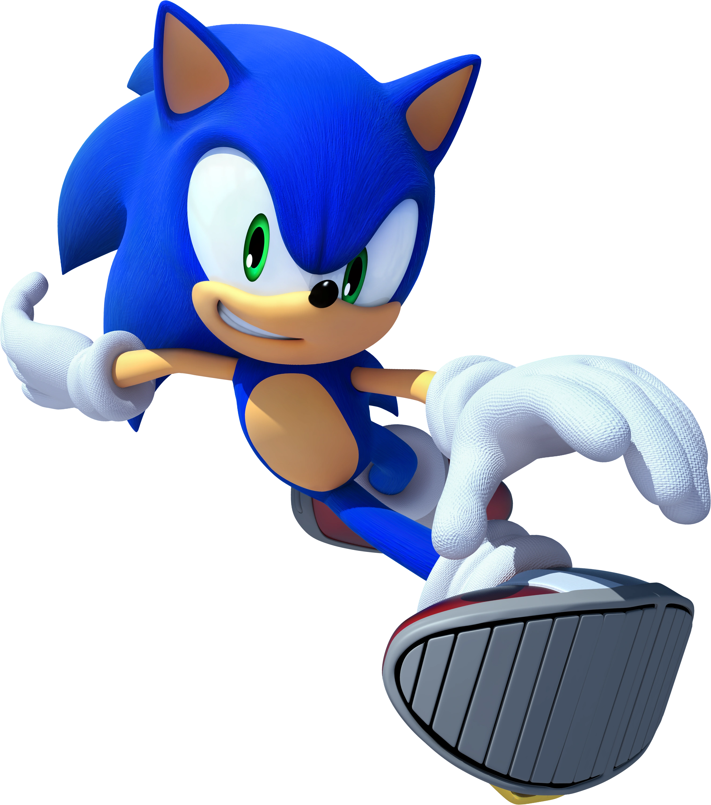

„Mein Name ist Sonic, Sonic the Hedgehog!“
Sonic the Hedgehog (ソニック・ザ・ヘッジホッグ Sonikku za Hejjihoggu) ist der Hauptprotagonist der Sonic the Hedgehog-Spielserie und SEGAs Maskottchen. Er wurde von dem Künstler Naoto Oshima, dem Designer Hirokazu Yasuhara und dem Programmierer Yuji Naka erfunden. Sonic ist ein fünfzehn Jahre alter, blauer, anthropomorpher, sehr friedlicher und launischer Igel, welcher seine Hauptfähigkeit in seinem Namen trägt (sonic, engl. f. Schall, d. h. er kann mit Schallgeschwindigkeit rennen) und immer auf der Suche nach Abenteuern ist, um seinen Erzfeind, Dr. Eggman, zu besiegen.
Sonic the Hedgehog hatte seinen ersten offiziellen Auftritt in dem gleichnamigen Spiel Sonic the Hedgehog, welches am 23. Juni 1991 erschienen war und mit dem Auftrag ein neues Maskottchen für Sega zu finden, veröffentlicht wurde. Im Jahr 1990, als Nintendo und Sega die größten Konkurrenten auf dem Konsolenmarkt waren, war Sega auf der Suche nach einem Maskottchen, dass das frühere Maskottchen Alex Kidd ablösen sollte, eine gute Ausstrahlung haben sollte und in der Lage ist mit dem berühmten Klempner Mario, seines Zeichens seit 1985 Maskottchen Nintendos, zu konkurrieren. Zu diesem Zweck entwickelte Naoto Ōshima den blauen Igel, der damals unter dem Codenamen "M. Needlemouse" (Needlemouse ist eine wörtliche Übersetzung von Hedgehog ins Japanische) bekannt war, Sega entschied sich dazu Sonic zu dem neuen Maskottchen Segas zu küren. Sonics Aussehen änderte sich mit der Zeit. Das Original von Ōshima hatte einen runden Körper, kurze Stacheln und eine nicht sichtbare Iris, als jedoch Sonic the Hedgehog 2 für den Megadrive erschien, vergrößerte man Anteile Sonics, so das jene größer und imposanter wirkten. Im Jahr 1998, in welchem Sonic Adventure erschien, wurde sein Aussehen nochmals von Yuji Uekawa geändert. So hatte man ihm längere Beine und Arme verliehen, sein Körper wirkte weniger kugelförmig, er bekam grüne Augen und seine Stacheln hingen mehr nach unten.
Die Geschwindigkeit von Sonic ist sein Markenzeichen. Er ist unter den bekannten Charakteren der Schnellste und kann sogar die Schallgeschwindigkeit überschreiten. Dadurch ist er auch als das schnellste Wesen der Welt bekannt und wird auch als der Schnellste des ganzen Universum gewertet. Durch seine Geschwindigkeit kann er Wände hochlaufen, über Wasser laufen und Gegner in die Luft schleudern, wenn er sie mit hoher Geschwindigkeit berührt.
Sonic zeigt in den Spielen häufig arkobatische Fähigkeiten. Seine Reflexe sind enorm, wodurch er Lasern, Raketen und anderen Gegenständen schnell ausweichen kann. Wenn er in die Luft springt, kann er zudem mehrere Tricks durchführen, bevor er wieder den Boden berührt.